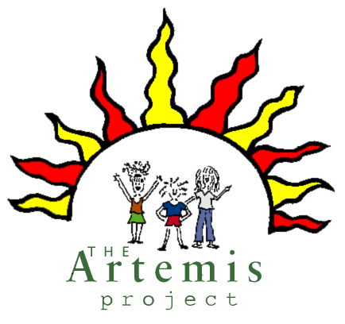

The Artemis Project is a five week summer program for rising ninth graders designed to enhance self-confidence and build leadership skills through hands-on experience with computers and discussion of important issues relevant to the lives of women and girls.
The initial pilot program, which ran from July 8 to August 7, 1996 involved 8 girls:
Thanks to all of the people and organizations who have helped us to realized the dreams we had for the Artemis Project.